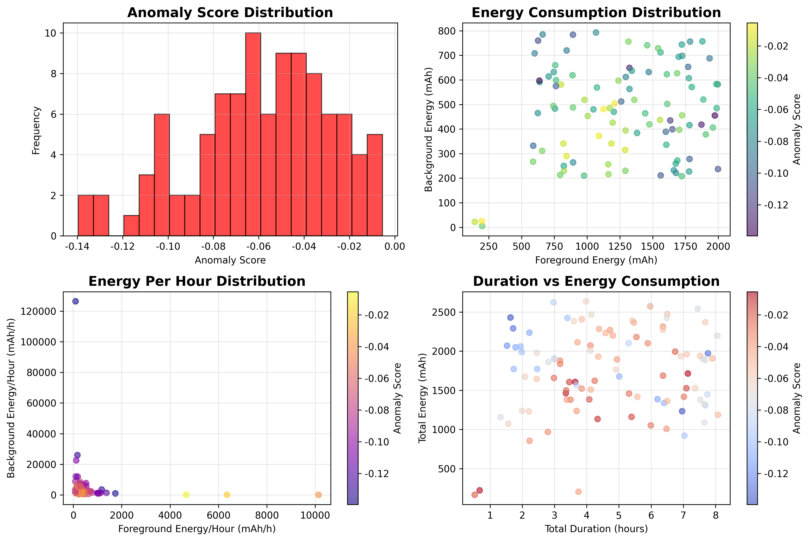
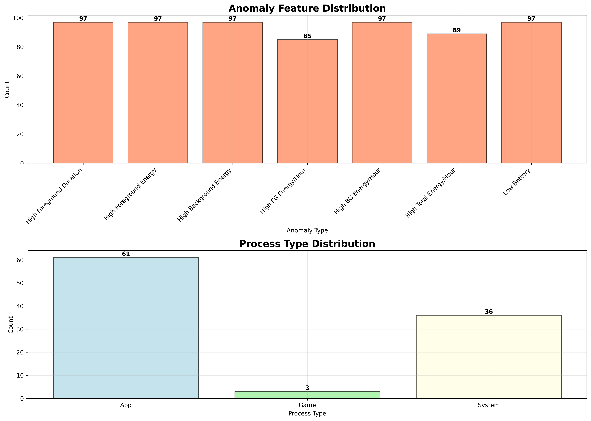
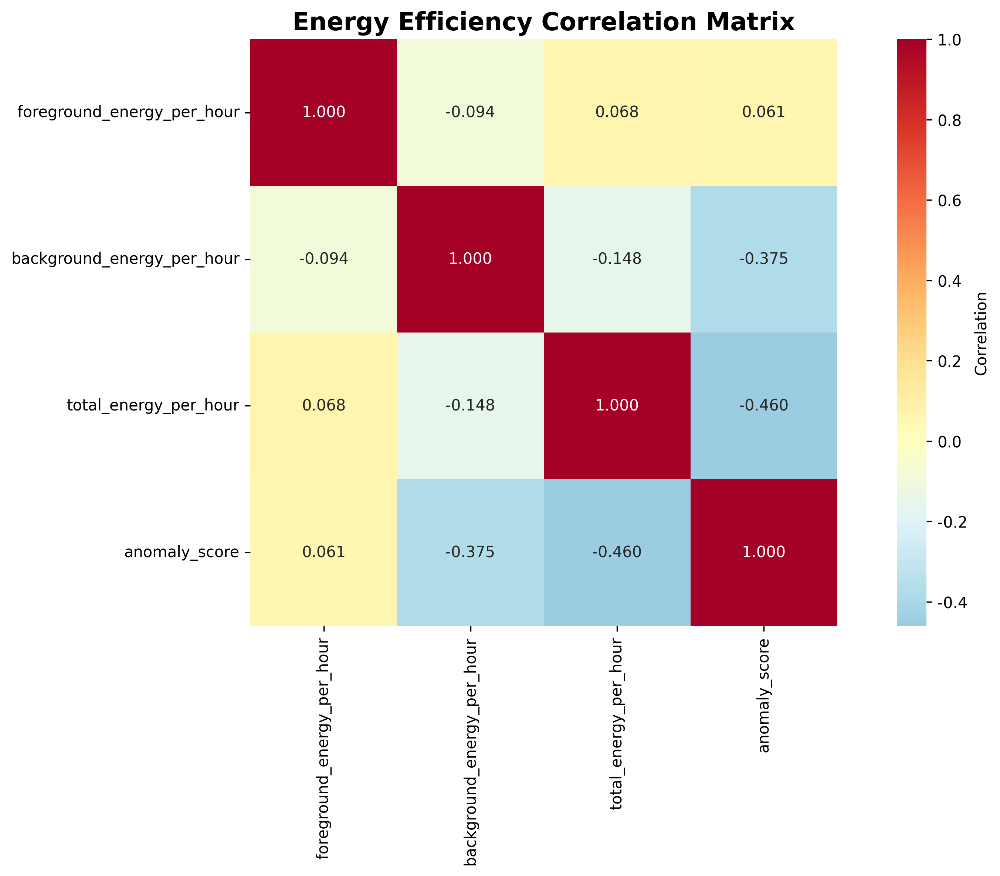

🔍 Android异常进程分析可视化结果
📊 分析概述: 本次分析使用Isolation Forest算法检测了Android系统中的异常进程，
重点关注能耗效率、运行时间和设备状态等关键指标。特别引入了单位时间能耗这一创新指标，
能够更准确地识别短时间高能耗和长时间低效率的异常进程。
📈 1. 异常分析总览图
图表说明: 展示异常分数分布、能耗分布、单位时间能耗分布和运行时间vs能耗的关系。
颜色深浅代表异常程度，越深表示越异常。

关键发现:
- 异常分数主要集中在-0.2到0.1之间，分数越低表示越异常
- 前台和后台能耗呈现明显的聚类特征
- 单位时间能耗显示出游戏类应用和系统服务的不同模式
- 运行时间与总能耗存在正相关关系，但存在异常点
📊 2. 异常特征分布图
图表说明: 统计各种异常特征的出现频次和进程类型分布。
帮助识别最常见的异常模式和不同类型应用的异常特点。

关键发现:
- 高单位时间能耗是最常见的异常特征
- 游戏类应用(Game)在异常进程中占比较高
- 系统服务(System)也存在显著的异常行为
- 后台单位时间能耗异常比前台更常见
🔥 3. 能耗效率相关性热力图
图表说明: 展示前台能耗、后台能耗、总单位时间能耗和异常分数之间的相关性。
颜色越红表示正相关越强，越蓝表示负相关越强。

关键发现:
- 前台和后台单位时间能耗与异常分数呈现负相关，证实了高能耗与异常的关联
- 前台和后台单位时间能耗之间存在一定的正相关性
- 总单位时间能耗综合反映了整体能耗效率
- 相关性分析验证了异常检测算法的有效性
🎯 核心技术创新
- 单位时间能耗指标: 引入mAh/小时概念，更准确评估能耗效率
- 应用类型区分: 针对游戏、系统服务等不同类型设置差异化阈值
- 多维度异常检测: 综合考虑运行时间、能耗、设备状态等多个维度
- 智能阈值设置: 基于数据分布自动调整异常检测阈值
📋 使用建议
- 重点关注: 单位时间能耗过高的进程，这些通常是性能优化的重点
- 游戏应用: 适当的高能耗是正常的，但需要关注异常峰值
- 系统服务: 后台长时间运行是正常的，但能耗应该保持在合理范围
- 低电量场景: 在设备电量较低时，所有高能耗行为都需要特别关注